Handle various input data source formats (csv, xlsx, xlsb, txt, parquet) with Python and Pandas
Introduction
In the process of ingesting and cleaning raw data in various formats using python, there were some tricks found to be useful based on the issues which were encountered. Types of source files covered in the article so far are as follows:
- xlsb (excel binary format)
- csv files where encoding are not UTF-8
- excel files with multiple tabs
- raw data files in .txt format
- parquet files
The corresponding notebook and sample data can be found at https://github.com/ZS-Weng/Data_Engineering/tree/main/Data_Cleaning
1. Reading in excel files in .xlsb format
There are various formats of excel files e.g. .xls, .xlsx, .xlsb, .xlsm etc. Based on the out of the box functionality from Pandas, the formats .xlsx and .xls are supported and the .xlsb (binary) format is not supported out of the box.
The most efficient solution I found is to install the pyxlsb extension. More details can be found at the PyPI project website: https://pypi.org/project/pyxlsb/
The code to execute including installation of the library will be as follows:
pip install pyxlsb
df = pd.read_excel(file, engine=”pyxlsb”)2. Resolve UnicodeDecodeError during CSV file read
Most of the files are encoded in “UTF-8” which is the default encoding. However, there are times when when the encoding in not “UTF-8” and there will be an error message similar to this:
UnicodeDecodeError: ‘utf-8’ codec can’t decode byte 0xff in position 0: invalid start byte
The most effective method I have encountered is to first read the file as binary using ‘rb’ mode to determine the encoding, then apply the encoding which was detected.
import chardet
with open(file, 'rb') as f:
encoding = chardet.detect(f.read())
print(encoding)The result will be something like this:
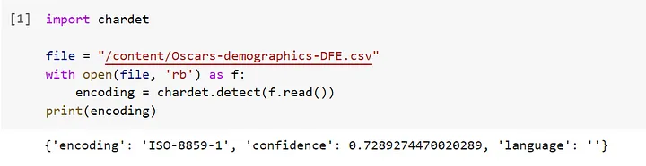
Based on the encoding identified, we can use the encoding in pd.read_csv()
df = pd.read_csv(file, encoding=encoding['encoding'])The result will look something like this:
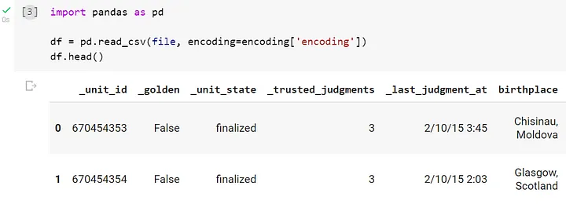
3. Extracting data from multiple sheets in excel
There are times where the data in excel might come from multiple sheets and we need to read in the data from all the sheets. The most straightforward way which I have found is using pd.read_excel with the parameter sheet_name=None. This will read all of the sheets in excel into a dictionary with the sheet name as the key and the data in DataFrames tagged to each sheet name.
Here we use an example where a sample SAP data dictionary with the relevant data schema. The details for each table are shared in each sheet while each sheet in excel represents the respective tables.
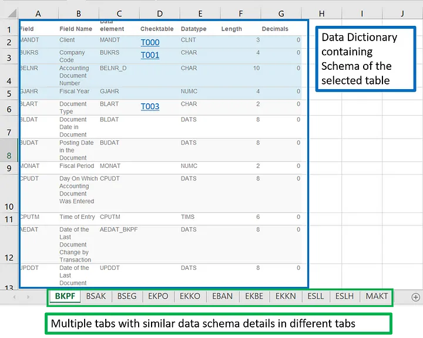
We can read in the data in all the sheets with the parameter sheet_name set to None. Here instead of a single data frame, we will have a dictionary with each sheet name as key and the data frame in the sheet as the corresponding value of the dictionary.
# Reading in the data
sample_SAP_data_dict = "./data/SAP Data Dictionary Selected Tables.xlsx"
data_sheet_dict = pd.read_excel(sample_SAP_data_dict, sheet_name=None)
# Display the names of each sheet in excel
list_sheets = list(data_sheet_dict.keys())
print(f"There are {len(list_sheets)} sheets in the excel file")
print(f"The sheets are {list_sheets}")As we print out the keys, we can see the sheet names being listed. In our example, this corresponds with some of the SAP table names.
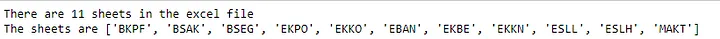
Below is an example when the key “BSEG” is applied for the dictionary, we can get the corresponding data frame which was read from the sheet containing the schema of the table.
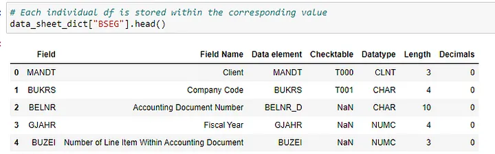
Subsequent analysis can be run at scale using the normal python dictionary and pandas functions and methods.
One of the analysis performed for our sample Data Dictionary is to find out which tables houses the similar data fields. We will first use a pivot_table method to create a new table where the column fields are shown as columns for each table. From there we join the tables together using pd.concat.
def extract_columns_info(df, sheet_name, list_column_field):
df_temp = df.copy()
df_temp["SAP_Table"] = sheet_name
df_temp["Present"] = 1
columns_select = ["SAP_Table"] + list_column_field + ["Present"]
return df_temp[columns_select].pivot_table(
columns=list_column_field, values="Present", index=["SAP_Table"]
)list_column_field = ["Field"]
list_df = []
for sheet_name, df in data_sheet_dict.items():
df_processed = extract_columns_info(df, sheet_name, list_column_field)
list_df.append(df_processed)
df_consolidated = pd.concat(list_df)
df_consolidated.fillna("", inplace=True)In the final result, we can we can see the common fields across various SAP tables. Below is a sample of the output.
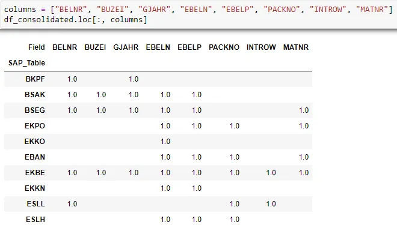
4. Writing out data in excel while maintaining formatting
The easiest way which I found to maintain formatting in excel is to write out the data to a hidden sheet and use a formatted sheet to show the data through the use of formulas. In this case, the formatting will remain when the data is updated.
We can set a hidden sheet where the raw data will be written to:
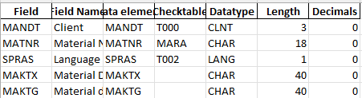
There can be a formatted sheet which will reference data from the hidden sheet. This is a formula view of the sheet.
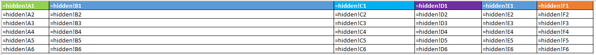
This is how the sheet looks like. referencing the raw data from the hidden sheet.
file = './data/sample_excel_output.xlsx'
with pd.ExcelWriter(file, engine='openpyxl', mode='a',if_sheet_exists='replace') as writer:
df.to_excel(writer, sheet_name='hidden', index=False)
# Get a handle to the worksheet.
worksheet = writer.sheets['hidden']
worksheet.hide()5. Reading .txt source files
For input data sources in .txt format, we can use the python open function directly to read the files. There will usually be text processing required depending on the delimiters used in the files.
I wrote a seperate article for the cleaning of SAP .txt input file format. The article can be found here
The .read() method can be used to read in the entire data source. There are usually some processing involved e.g. all types of new line characters are represented with .
# Converts any type of new line to \n
with open("data/Sample SAP Format.txt", encoding="utf-8") as f:
content_raw = f.read()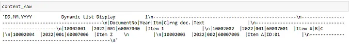
There are times where the type of new line characters are important. In this case, we set the parameter newline= “” and we can see below that the original Carriage Return Line Feed () in the content.
# Alternative way to read the file with CRLF (Carriage Return Line Feed intact)
with open("data/Sample SAP Format.txt", encoding="utf-8", newline="") as f:
content_raw_2 = f.read()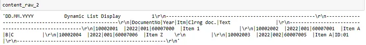
Another method common used is .readlines() which will break up each individual lines at the line breaks and provide the data in a list. An example is shown below. From the individual lines, the data can be further split based on established delimiters or other business rules.
with open("data/Sample SAP Format.txt", encoding="utf-8") as f:
content_split_lines = f.readlines()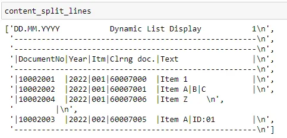
6. Writing and reading Parquet Files
Parquet is a type of file format for storing and organizing large amounts of data in a efficient and organized manner. The files are in the .parquet extension.
It is a columnar storage format, meaning that data is stored by columns instead of rows. This allows for faster data retrieval, especially for queries that only need to access a small subset of columns. The format is optimized for use with big data technologies like Apache Hadoop and Apache Spark and is widely used in data warehousing and big data analytics applications.
For setting up analytics data lakes parquet has the advantages of being smaller in size as it is compressed and being able to retain the data schema types compared to storing the data in csv. However, as the format is in a binary format, it will not be human readable.
Writing of Data Frame into Parquet Files
To write a data frame into parquet files, we first need to install the pyarrow libarary.
pip install pyarrow
After installation we can use pandas to_parquet method to store the data from a data frame into parquet format. Please see the example below on the code comparison between writing to a csv and parquet file and notice how much faster the writing data in parquet format is as compared to csv. Also, we can see the difference in file size of the parquet file vs csv.
#Writing to CSV
df_retail_original.to_csv("./data/Online_Retail.csv", index=False)
#Writing to Parquet
df_retail_original.to_parquet("./data/Online_Retail.parquet")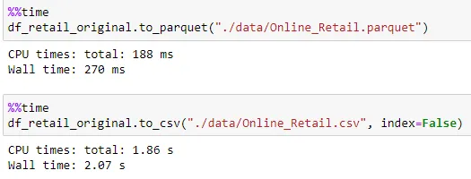
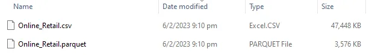
Reading of Data Frame from parquet files
We can use pandas read_parquet method with pyarrow engine to read data from existing parquet file. Using the same method, we read the parquet and csv files previously written.
#Reading from CSV
df_from_csv = pd.read_csv("./data/Online_Retail.csv")
#Reading from Parquet
df_from_parquet = pd.read_parquet("./data/Online_Retail.parquet", engine="pyarrow")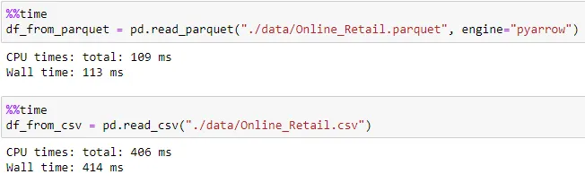
Thanks for reading and hope this was useful in some way!